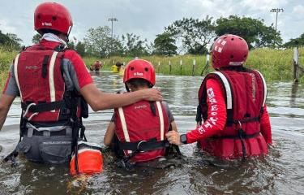
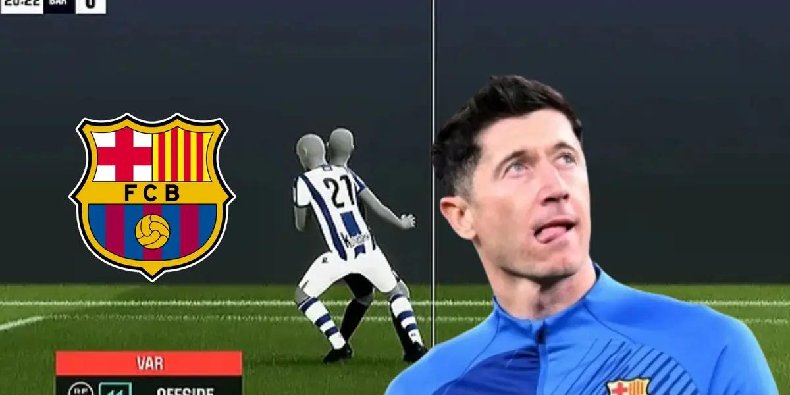

Sucesos
Tragedia en Guanacaste: 42 personas rescatadas por lluvias del huracán Rafael
Guanacaste, Costa Rica - 16 de noviembre de 2024

Intensas lluvias del huracán Rafael provocaron el colapso de un puente en Guanacaste y dejaron a 42 personas atrapadas, quienes fueron rescatadas por equipos de emergencia. Varias familias están en albergues temporales mientras persiste la alerta por nuevas lluvias.
Deportes
Polémico gol anulado a Lewandowski genera críticas al VAR
San Sebastián, 10 de noviembre de 2024

Durante el partido entre Barcelona y Real Sociedad, un gol de Robert Lewandowski fue anulado por el VAR por un fuera de juego milimétrico. Las imágenes mostraron que la bota del delantero estaba ligeramente adelantada, lo que generó controversia y críticas. Deco, director deportivo del Barcelona, cuestionó la claridad del sistema semiautomático de fuera de juego, señalando que "el VAR aún no ha arreglado los problemas esperados.